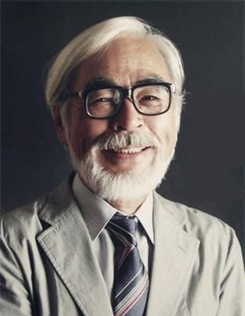

Hi buddy,
Welcome and Nice to see u.
Build Log
- 25 Jan 2014 » Add a anchor to locate.
- 24 Jan 2014 » Fixed bugs of ME.
- 23 Jan 2014 » Add a menu effects(toggle).
- 22 Jan 2014 » Decorate it again.
- 22 Jan 2014 » Install several plugins.
- 21 Jan 2014 » Drag posts here from CSDN.
- 20 Jan 2014 » Register the domain and bind it.
- 19 Jan 2014 » Bulid up the framework.